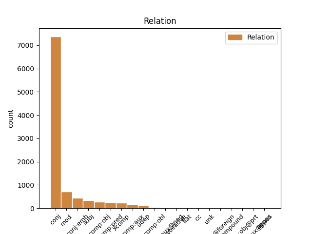
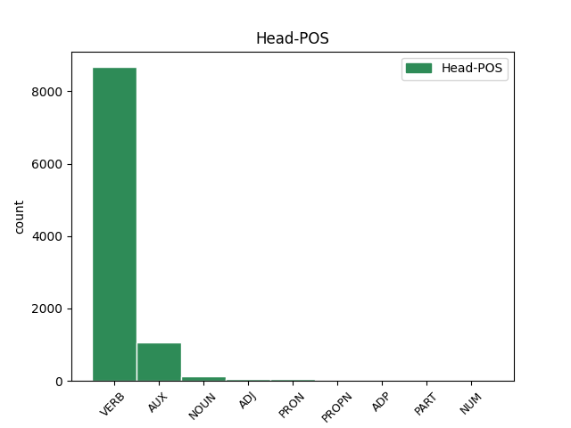
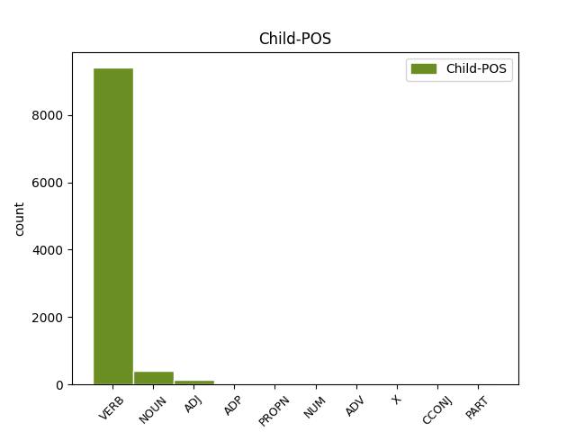

Distribution of features within this leaf



Agreement Rules sorted by frequency.
- When the dependent token is the conjunct(conj) of the head token, and the dependent token is VERB.
1 Hann _ _ _ _ 0 _ _ _
2 tók _ _ _ _ 0 _ _ _
3 ímóti _ _ _ _ 0 _ _ _
4 honum _ _ _ _ 0 _ _ _
5 , _ _ _ _ 0 _ _ _
6 gav _ _ _ _ 0 _ _ _
7 honum _ _ _ _ 0 _ _ _
8 nýggjan _ _ _ _ 0 _ _ _
9 búna _ _ _ _ 0 _ _ _
10 , _ _ _ _ 0 _ _ _
11 helt _ _ _ _ 0 _ _ _
12 veitslu _ _ _ _ 0 _ _ _
13 fyri fyri VERB _ Mood=Ind|Number=Sing|Person=3|Tense=Past|VerbForm=Fin|Voice=Act 0 _ _ _
14 honum- _ _ _ _ 0 _ _ _
15 og _ _ _ _ 0 _ _ _
16 gjørdi gjørdi VERB _ Mood=Ind|Number=Sing|Person=3|Tense=Past|VerbForm=Fin|Voice=Act 13 conj _ _
17 hann _ _ _ _ 0 _ _ _
18 til _ _ _ _ 0 _ _ _
19 umboð _ _ _ _ 0 _ _ _
20 Sítt _ _ _ _ 0 _ _ _
21 aftur _ _ _ _ 0 _ _ _
22 . _ _ _ _ 0 _ _ _
1 Í _ _ _ _ 0 _ _ _
2 Haraldssundi _ _ _ _ 0 _ _ _
3 er er VERB _ Mood=Ind|Number=Sing|Person=3|Tense=Pres|VerbForm=Fin|Voice=Act 0 _ _ _
4 onki _ _ _ _ 0 _ _ _
5 vinnuligt _ _ _ _ 0 _ _ _
6 virksemi _ _ _ _ 0 _ _ _
7 uttan _ _ _ _ 0 _ _ _
8 landbúnaður _ _ _ _ 0 _ _ _
9 , _ _ _ _ 0 _ _ _
10 ella _ _ _ _ 0 _ _ _
11 rættari _ _ _ _ 0 _ _ _
12 sagt si VERB _ Mood=Ind|Number=Sing|Person=3|Tense=Pres|VerbForm=Fin|Voice=Act 3 mod _ _
13 seyðahald _ _ _ _ 0 _ _ _
14 . _ _ _ _ 0 _ _ _
1 ” _ _ _ _ 0 _ _ _
2 Gerandisdagurin _ _ _ _ 0 _ _ _
3 er _ _ _ _ 0 _ _ _
4 ikki _ _ _ _ 0 _ _ _
5 ein _ _ _ _ 0 _ _ _
6 sjálvfylgja _ _ _ _ 0 _ _ _
7 hjá _ _ _ _ 0 _ _ _
8 teimum _ _ _ _ 0 _ _ _
9 , _ _ _ _ 0 _ _ _
10 sum _ _ _ _ 0 _ _ _
11 tørva tørvan VERB _ Mood=Ind|Number=Sing|Person=3|Tense=Pres|VerbForm=Fin 0 _ _ _
12 serliga _ _ _ _ 0 _ _ _
13 hjálp _ _ _ _ 0 _ _ _
14 og _ _ _ _ 0 _ _ _
15 tað _ _ _ _ 0 _ _ _
16 er er VERB _ Mood=Ind|Number=Sing|Person=3|Tense=Pres|VerbForm=Fin|Voice=Act 11 conj:emb _ _
17 tað _ _ _ _ 0 _ _ _
18 góða _ _ _ _ 0 _ _ _
19 lívið _ _ _ _ 0 _ _ _
20 heldur _ _ _ _ 0 _ _ _
21 ikki _ _ _ _ 0 _ _ _
22 . _ _ _ _ 0 _ _ _
1 Tue _ _ _ _ 0 _ _ _
2 , _ _ _ _ 0 _ _ _
3 16 _ _ _ _ 0 _ _ _
4 Dec _ _ _ _ 0 _ _ _
5 2014 _ _ _ _ 0 _ _ _
6 12:36:34 _ _ _ _ 0 _ _ _
7 GMT _ _ _ _ 0 _ _ _
8 av _ _ _ _ 0 _ _ _
9 Eiler _ _ _ _ 0 _ _ _
10 , _ _ _ _ 0 _ _ _
11 35962 _ _ _ _ 0 _ _ _
12 ferðir _ _ _ _ 0 _ _ _
13 sætt _ _ _ _ 0 _ _ _
14 Skúlablaðið _ _ _ _ 0 _ _ _
15 Blaðlúsin _ _ _ _ 0 _ _ _
16 , _ _ _ _ 0 _ _ _
17 sum _ _ _ _ 0 _ _ _
18 var vere VERB _ Mood=Ind|Number=Sing|Person=3|Tense=Past|VerbForm=Fin|Voice=Act 0 _ _ _
19 fastur _ _ _ _ 0 _ _ _
20 táttur _ _ _ _ 0 _ _ _
21 í _ _ _ _ 0 _ _ _
22 framhaldsdeildini _ _ _ _ 0 _ _ _
23 fyri _ _ _ _ 0 _ _ _
24 nøkrum _ _ _ _ 0 _ _ _
25 árum _ _ _ _ 0 _ _ _
26 síðani _ _ _ _ 0 _ _ _
27 , _ _ _ _ 0 _ _ _
28 er vere VERB _ Mood=Ind|Number=Sing|Person=3|Tense=Pres|VerbForm=Fin|Voice=Act 18 comp:pred _ _
29 aftur _ _ _ _ 0 _ _ _
30 á _ _ _ _ 0 _ _ _
31 skránni _ _ _ _ 0 _ _ _
32 , _ _ _ _ 0 _ _ _
33 í _ _ _ _ 0 _ _ _
34 sambandi _ _ _ _ 0 _ _ _
35 við _ _ _ _ 0 _ _ _
36 jóladagarnar _ _ _ _ 0 _ _ _
37 . _ _ _ _ 0 _ _ _
1 Guttormur _ _ _ _ 0 _ _ _
2 vaks vaks VERB _ Mood=Ind|Number=Sing|Person=3|Tense=Past|VerbForm=Fin|Voice=Act 0 _ _ _
3 tí tí VERB _ Mood=Ind|Number=Sing|Person=3|Tense=Past|VerbForm=Fin|Voice=Act 2 xcomp _ _
4 upp _ _ _ _ 0 _ _ _
5 í _ _ _ _ 0 _ _ _
6 húsinum _ _ _ _ 0 _ _ _
7 hjá _ _ _ _ 0 _ _ _
8 Jóannesi _ _ _ _ 0 _ _ _
9 ommubeiggjanum _ _ _ _ 0 _ _ _
10 , _ _ _ _ 0 _ _ _
11 sum _ _ _ _ 0 _ _ _
12 mamman _ _ _ _ 0 _ _ _
13 var _ _ _ _ 0 _ _ _
14 gift _ _ _ _ 0 _ _ _
15 inn _ _ _ _ 0 _ _ _
16 í _ _ _ _ 0 _ _ _
17 . _ _ _ _ 0 _ _ _
18 Guttormur _ _ _ _ 0 _ _ _
19 átti _ _ _ _ 0 _ _ _
20 hálvsystkin _ _ _ _ 0 _ _ _
21 , _ _ _ _ 0 _ _ _
22 men _ _ _ _ 0 _ _ _
23 bert _ _ _ _ 0 _ _ _
24 eitt _ _ _ _ 0 _ _ _
25 av _ _ _ _ 0 _ _ _
26 teimum _ _ _ _ 0 _ _ _
27 var _ _ _ _ 0 _ _ _
28 tilkomið _ _ _ _ 0 _ _ _
29 , _ _ _ _ 0 _ _ _
30 ein _ _ _ _ 0 _ _ _
31 systir _ _ _ _ 0 _ _ _
32 , _ _ _ _ 0 _ _ _
33 íð _ _ _ _ 0 _ _ _
34 búsettist _ _ _ _ 0 _ _ _
35 í _ _ _ _ 0 _ _ _
36 Svínoy _ _ _ _ 0 _ _ _
37 . _ _ _ _ 0 _ _ _
1 Eitt _ _ _ _ 0 _ _ _
2 lítið _ _ _ _ 0 _ _ _
3 sindur sindu VERB _ Mood=Ind|Number=Plur|Person=3|Tense=Pres|VerbForm=Fin|Voice=Act 5 subj _ _
4 hægri _ _ _ _ 0 _ _ _
5 eru verue AUX _ Mood=Ind|Number=Plur|Person=3|Tense=Pres|VerbForm=Fin|Voice=Act 0 _ _ _
6 JHR _ _ _ _ 0 _ _ _
7 Entreprenørar _ _ _ _ 0 _ _ _
8 við _ _ _ _ 0 _ _ _
9 1,494 _ _ _ _ 0 _ _ _
10 mió _ _ _ _ 0 _ _ _
11 . _ _ _ _ 0 _ _ _
1 So _ _ _ _ 0 _ _ _
2 tá _ _ _ _ 0 _ _ _
3 ið _ _ _ _ 0 _ _ _
4 eg _ _ _ _ 0 _ _ _
5 kom _ _ _ _ 0 _ _ _
6 á _ _ _ _ 0 _ _ _
7 møti _ _ _ _ 0 _ _ _
8 eina _ _ _ _ 0 _ _ _
9 viku _ _ _ _ 0 _ _ _
10 aftaná _ _ _ _ 0 _ _ _
11 knekkaði knekkaði VERB _ Mood=Ind|Number=Sing|Person=3|Tense=Past|VerbForm=Fin|Voice=Act 0 _ _ _
12 eg _ _ _ _ 0 _ _ _
13 framman _ _ _ _ 0 _ _ _
14 fyri fyri VERB _ Mood=Ind|Number=Sing|Person=3|Tense=Past|VerbForm=Fin|Voice=Act 11 comp:obj _ _
15 Guds _ _ _ _ 0 _ _ _
16 ásjón _ _ _ _ 0 _ _ _
17 , _ _ _ _ 0 _ _ _
18 og _ _ _ _ 0 _ _ _
19 eg _ _ _ _ 0 _ _ _
20 sá _ _ _ _ 0 _ _ _
21 , _ _ _ _ 0 _ _ _
22 at _ _ _ _ 0 _ _ _
23 eg _ _ _ _ 0 _ _ _
24 ikki _ _ _ _ 0 _ _ _
25 kundi _ _ _ _ 0 _ _ _
26 blíva _ _ _ _ 0 _ _ _
27 við _ _ _ _ 0 _ _ _
28 at _ _ _ _ 0 _ _ _
29 liva _ _ _ _ 0 _ _ _
30 , _ _ _ _ 0 _ _ _
31 sum _ _ _ _ 0 _ _ _
32 eg _ _ _ _ 0 _ _ _
33 gjørdi _ _ _ _ 0 _ _ _
34 . _ _ _ _ 0 _ _ _
1 Í _ _ _ _ 0 _ _ _
2 sambandi _ _ _ _ 0 _ _ _
3 við _ _ _ _ 0 _ _ _
4 fyrireikingina _ _ _ _ 0 _ _ _
5 er _ _ _ _ 0 _ _ _
6 rætt _ _ _ _ 0 _ _ _
7 at _ _ _ _ 0 _ _ _
8 leggja _ _ _ _ 0 _ _ _
9 tað _ _ _ _ 0 _ _ _
10 so _ _ _ _ 0 _ _ _
11 til _ _ _ _ 0 _ _ _
12 rættis _ _ _ _ 0 _ _ _
13 , _ _ _ _ 0 _ _ _
14 at _ _ _ _ 0 _ _ _
15 onkur _ _ _ _ 0 _ _ _
16 kemur _ _ _ _ 0 _ _ _
17 eftir _ _ _ _ 0 _ _ _
18 tær _ _ _ _ 0 _ _ _
19 , _ _ _ _ 0 _ _ _
20 tá _ _ _ _ 0 _ _ _
21 ið _ _ _ _ 0 _ _ _
22 tú _ _ _ _ 0 _ _ _
23 verður _ _ _ _ 0 _ _ _
24 útskrivað _ _ _ _ 0 _ _ _
25 og _ _ _ _ 0 _ _ _
26 eisini _ _ _ _ 0 _ _ _
27 at _ _ _ _ 0 _ _ _
28 skipa _ _ _ _ 0 _ _ _
29 so _ _ _ _ 0 _ _ _
30 fyri _ _ _ _ 0 _ _ _
31 , _ _ _ _ 0 _ _ _
32 at _ _ _ _ 0 _ _ _
33 tú _ _ _ _ 0 _ _ _
34 hevur hevur VERB _ Mood=Opt|Number=Sing|Person=1|Tense=Pres|VerbForm=Fin|Voice=Act 0 _ _ _
35 hjálp _ _ _ _ 0 _ _ _
36 heima heima VERB _ Mood=Ind|Number=Sing|Person=1|Tense=Pres|VerbForm=Fin|Voice=Act 34 comp:aux _ _
37 við _ _ _ _ 0 _ _ _
38 hús _ _ _ _ 0 _ _ _
39 teir _ _ _ _ 0 _ _ _
40 fyrstu _ _ _ _ 0 _ _ _
41 dagarnar _ _ _ _ 0 _ _ _
42 eftir _ _ _ _ 0 _ _ _
43 skurðviðgerðina _ _ _ _ 0 _ _ _
44 . _ _ _ _ 0 _ _ _
1 Vary _ _ _ _ 0 _ _ _
2 : _ _ _ _ 0 _ _ _
3 Accept _ _ _ _ 0 _ _ _
4 - _ _ _ _ 0 _ _ _
5 Encoding _ _ _ _ 0 _ _ _
6 Date _ _ _ _ 0 _ _ _
7 : _ _ _ _ 0 _ _ _
8 Tue _ _ _ _ 0 _ _ _
9 , _ _ _ _ 0 _ _ _
10 27 _ _ _ _ 0 _ _ _
11 Jan _ _ _ _ 0 _ _ _
12 2015 _ _ _ _ 0 _ _ _
13 08:03:14 _ _ _ _ 0 _ _ _
14 GMT _ _ _ _ 0 _ _ _
15 Connection _ _ _ _ 0 _ _ _
16 : _ _ _ _ 0 _ _ _
17 close _ _ _ _ 0 _ _ _
18 Ministry _ _ _ _ 0 _ _ _
19 of _ _ _ _ 0 _ _ _
20 education _ _ _ _ 0 _ _ _
21 , _ _ _ _ 0 _ _ _
22 research _ _ _ _ 0 _ _ _
23 and _ _ _ _ 0 _ _ _
24 culture _ _ _ _ 0 _ _ _
25 Niðan _ _ _ _ 0 _ _ _
26 fyri _ _ _ _ 0 _ _ _
27 er vere VERB _ Mood=Ind|Number=Sing|Person=3|Shared=Yes|Tense=Pres|VerbForm=Fin|Voice=Act 0 _ _ _
28 yvirlit _ _ _ _ 0 _ _ _
29 yvir _ _ _ _ 0 _ _ _
30 lógir _ _ _ _ 0 _ _ _
31 , _ _ _ _ 0 _ _ _
32 ið _ _ _ _ 0 _ _ _
33 Mentamálaráðið _ _ _ _ 0 _ _ _
34 fyrisitur fyrisitur NOUN _ Mood=Ind|Number=Sing|Person=3|Tense=Pres|VerbForm=Fin|Voice=Act 27 conj _ _
35 . _ _ _ _ 0 _ _ _
1 Og _ _ _ _ 0 _ _ _
2 tá _ _ _ _ 0 _ _ _
3 vit _ _ _ _ 0 _ _ _
4 við _ _ _ _ 0 _ _ _
5 eitt _ _ _ _ 0 _ _ _
6 høvi _ _ _ _ 0 _ _ _
7 , _ _ _ _ 0 _ _ _
8 sum _ _ _ _ 0 _ _ _
9 hetta _ _ _ _ 0 _ _ _
10 síggja _ _ _ _ 0 _ _ _
11 , _ _ _ _ 0 _ _ _
12 at _ _ _ _ 0 _ _ _
13 hugurin _ _ _ _ 0 _ _ _
14 áræðið _ _ _ _ 0 _ _ _
15 og _ _ _ _ 0 _ _ _
16 verksetanarandi _ _ _ _ 0 _ _ _
17 kemur _ _ _ _ 0 _ _ _
18 frá _ _ _ _ 0 _ _ _
19 okkara _ _ _ _ 0 _ _ _
20 unga _ _ _ _ 0 _ _ _
21 ættarliði _ _ _ _ 0 _ _ _
22 , _ _ _ _ 0 _ _ _
23 so _ _ _ _ 0 _ _ _
24 er vere VERB _ Mood=Ind|Number=Sing|Person=3|Tense=Pres|VerbForm=Fin|Voice=Act 0 _ _ _
25 tað _ _ _ _ 0 _ _ _
26 okkara _ _ _ _ 0 _ _ _
27 sterkasta _ _ _ _ 0 _ _ _
28 “ _ _ _ _ 0 _ _ _
29 svør svør NOUN _ Mood=Ind|Number=Sing|Person=3|Tense=Pres|VerbForm=Fin|Voice=Act 24 subj _ _
30 ” _ _ _ _ 0 _ _ _
31 og _ _ _ _ 0 _ _ _
32 borgar _ _ _ _ 0 _ _ _
33 tað _ _ _ _ 0 _ _ _
34 fyri _ _ _ _ 0 _ _ _
35 einari _ _ _ _ 0 _ _ _
36 bjartari _ _ _ _ 0 _ _ _
37 framtíð _ _ _ _ 0 _ _ _
38 ! _ _ _ _ 0 _ _ _
1 Dirvið dirvan VERB _ Mood=Imp|Number=Sing|Person=2|VerbForm=Fin 0 _ _ _
2 síggja _ _ _ _ 0 _ _ _
3 vit _ _ _ _ 0 _ _ _
4 aftur _ _ _ _ 0 _ _ _
5 í _ _ _ _ 0 _ _ _
6 myndlistini _ _ _ _ 0 _ _ _
7 hjá _ _ _ _ 0 _ _ _
8 Lív _ _ _ _ 0 _ _ _
9 – _ _ _ _ 0 _ _ _
10 síggi síggi ADJ _ Mood=Imp|Number=Sing|Person=2|VerbForm=Fin 1 conj _ _
11 eisini _ _ _ _ 0 _ _ _
12 at _ _ _ _ 0 _ _ _
13 tú _ _ _ _ 0 _ _ _
14 hevur _ _ _ _ 0 _ _ _
15 flutt _ _ _ _ 0 _ _ _
16 teg _ _ _ _ 0 _ _ _
17 síðani _ _ _ _ 0 _ _ _
18 síðstu _ _ _ _ 0 _ _ _
19 framsýning _ _ _ _ 0 _ _ _
20 , _ _ _ _ 0 _ _ _
21 sum _ _ _ _ 0 _ _ _
22 eg _ _ _ _ 0 _ _ _
23 sá _ _ _ _ 0 _ _ _
24 hjá _ _ _ _ 0 _ _ _
25 tær _ _ _ _ 0 _ _ _
26 í _ _ _ _ 0 _ _ _
27 Riberhúsi _ _ _ _ 0 _ _ _
28 í _ _ _ _ 0 _ _ _
29 Fuglafiðri _ _ _ _ 0 _ _ _
30 í _ _ _ _ 0 _ _ _
31 2007 _ _ _ _ 0 _ _ _
32 – _ _ _ _ 0 _ _ _
33 har _ _ _ _ 0 _ _ _
34 ið _ _ _ _ 0 _ _ _
35 blái _ _ _ _ 0 _ _ _
36 liturin _ _ _ _ 0 _ _ _
37 hevði _ _ _ _ 0 _ _ _
38 yvirveldi _ _ _ _ 0 _ _ _
39 . _ _ _ _ 0 _ _ _
1 Í _ _ _ _ 0 _ _ _
2 hesum _ _ _ _ 0 _ _ _
3 sambandi _ _ _ _ 0 _ _ _
4 verður _ _ _ _ 0 _ _ _
5 víst _ _ _ _ 0 _ _ _
6 til _ _ _ _ 0 _ _ _
7 svarið _ _ _ _ 0 _ _ _
8 upp _ _ _ _ 0 _ _ _
9 á _ _ _ _ 0 _ _ _
10 1 _ _ _ _ 0 _ _ _
11 . _ _ _ _ 0 _ _ _
12 spurningin _ _ _ _ 0 _ _ _
13 , _ _ _ _ 0 _ _ _
14 har ha VERB _ Mood=Ind|Number=Sing|Person=3|Tense=Pres|VerbForm=Fin|Voice=Act 0 _ _ _
15 víst _ _ _ _ 0 _ _ _
16 verður _ _ _ _ 0 _ _ _
17 á _ _ _ _ 0 _ _ _
18 , _ _ _ _ 0 _ _ _
19 hvat _ _ _ _ 0 _ _ _
20 samgonguskjalið _ _ _ _ 0 _ _ _
21 sigur sigur NOUN _ Mood=Ind|Number=Sing|Person=3|Tense=Pres|VerbForm=Fin|Voice=Act 14 comp:obj _ _
22 um _ _ _ _ 0 _ _ _
23 kringvarpsspurningin _ _ _ _ 0 _ _ _
24 í _ _ _ _ 0 _ _ _
25 síni _ _ _ _ 0 _ _ _
26 heild _ _ _ _ 0 _ _ _
27 . _ _ _ _ 0 _ _ _
1 Eg _ _ _ _ 0 _ _ _
2 havi _ _ _ _ 0 _ _ _
3 fingi _ _ _ _ 0 _ _ _
4 ein _ _ _ _ 0 _ _ _
5 so _ _ _ _ 0 _ _ _
6 raðuligan _ _ _ _ 0 _ _ _
7 hug _ _ _ _ 0 _ _ _
8 at _ _ _ _ 0 _ _ _
9 fáa _ _ _ _ 0 _ _ _
10 mær _ _ _ _ 0 _ _ _
11 eitt _ _ _ _ 0 _ _ _
12 ella _ _ _ _ 0 _ _ _
13 annað _ _ _ _ 0 _ _ _
14 OS _ _ _ _ 0 _ _ _
15 á _ _ _ _ 0 _ _ _
16 ein _ _ _ _ 0 _ _ _
17 USB _ _ _ _ 0 _ _ _
18 , _ _ _ _ 0 _ _ _
19 er vere VERB _ Mood=Ind|Number=Sing|Person=3|Tense=Pres|VerbForm=Fin|Voice=Act 0 _ _ _
20 tað _ _ _ _ 0 _ _ _
21 nakar _ _ _ _ 0 _ _ _
22 í _ _ _ _ 0 _ _ _
23 hevur _ _ _ _ 0 _ _ _
24 royndir royndir VERB _ Mood=Ind|Number=Sing|Person=3|Tense=Pres|VerbForm=Fin|Voice=Act 19 udep _ _
25 við _ _ _ _ 0 _ _ _
26 hesum _ _ _ _ 0 _ _ _
27 ? _ _ _ _ 0 _ _ _
1 Hendrik _ _ _ _ 0 _ _ _
2 Joensen _ _ _ _ 0 _ _ _
3 frá _ _ _ _ 0 _ _ _
4 alistøðini _ _ _ _ 0 _ _ _
5 á _ _ _ _ 0 _ _ _
6 Funningsfirði _ _ _ _ 0 _ _ _
7 tók tók VERB _ Mood=Ind|Number=Sing|Person=3|Tense=Past|VerbForm=Fin|Voice=Act 0 _ _ _
8 ímóti _ _ _ _ 0 _ _ _
9 heiðursbrævi _ _ _ _ 0 _ _ _
10 frá _ _ _ _ 0 _ _ _
11 Havbúnaðarfelagnum _ _ _ _ 0 _ _ _
12 fyri fyri NOUN _ Mood=Ind|Number=Sing|Person=3|Tense=Past|VerbForm=Fin|Voice=Act 7 udep _ _
13 fyrsta _ _ _ _ 0 _ _ _
14 plássið _ _ _ _ 0 _ _ _
15 . _ _ _ _ 0 _ _ _
1 Eitt _ _ _ _ 0 _ _ _
2 sum _ _ _ _ 0 _ _ _
3 bókaummælarin _ _ _ _ 0 _ _ _
4 legði lejan VERB _ Mood=Ind|Number=Sing|Person=3|Tense=Past|VerbForm=Fin|Voice=Act 7 comp:obl _ _
5 dent _ _ _ _ 0 _ _ _
6 á _ _ _ _ 0 _ _ _
7 var vere VERB _ Mood=Ind|Number=Sing|Person=3|Tense=Past|VerbForm=Fin|Voice=Act 0 _ _ _
8 , _ _ _ _ 0 _ _ _
9 at _ _ _ _ 0 _ _ _
10 í _ _ _ _ 0 _ _ _
11 bókini _ _ _ _ 0 _ _ _
12 kunnu _ _ _ _ 0 _ _ _
13 vit _ _ _ _ 0 _ _ _
14 eisini _ _ _ _ 0 _ _ _
15 lesa _ _ _ _ 0 _ _ _
16 um _ _ _ _ 0 _ _ _
17 mannin _ _ _ _ 0 _ _ _
18 hjá _ _ _ _ 0 _ _ _
19 Nikolinu _ _ _ _ 0 _ _ _
20 , _ _ _ _ 0 _ _ _
21 Jóan _ _ _ _ 0 _ _ _
22 Hans _ _ _ _ 0 _ _ _
23 Simonsen _ _ _ _ 0 _ _ _
24 , _ _ _ _ 0 _ _ _
25 sum _ _ _ _ 0 _ _ _
26 vit _ _ _ _ 0 _ _ _
27 annars _ _ _ _ 0 _ _ _
28 ikki _ _ _ _ 0 _ _ _
29 hoyra _ _ _ _ 0 _ _ _
30 so _ _ _ _ 0 _ _ _
31 nógv _ _ _ _ 0 _ _ _
32 um _ _ _ _ 0 _ _ _
33 . _ _ _ _ 0 _ _ _
1 Í _ _ _ _ 0 _ _ _
2 uppgongutíðum _ _ _ _ 0 _ _ _
3 brúka brúk NOUN _ Mood=Ind|Number=Sing|Person=3|Tense=Pres|VerbForm=Fin 0 _ _ _
4 vit vit ADJ _ Mood=Ind|Number=Sing|Person=3|Tense=Pres|VerbForm=Fin|Voice=Act 3 mod _ _
5 alt _ _ _ _ 0 _ _ _
6 tað _ _ _ _ 0 _ _ _
7 , _ _ _ _ 0 _ _ _
8 sum _ _ _ _ 0 _ _ _
9 forvunnið _ _ _ _ 0 _ _ _
10 verður _ _ _ _ 0 _ _ _
11 og _ _ _ _ 0 _ _ _
12 enntá _ _ _ _ 0 _ _ _
13 væl _ _ _ _ 0 _ _ _
14 afturat _ _ _ _ 0 _ _ _
15 , _ _ _ _ 0 _ _ _
16 og _ _ _ _ 0 _ _ _
17 tá _ _ _ _ 0 _ _ _
18 so _ _ _ _ 0 _ _ _
19 niðurgongdin _ _ _ _ 0 _ _ _
20 kemur _ _ _ _ 0 _ _ _
21 , _ _ _ _ 0 _ _ _
22 er _ _ _ _ 0 _ _ _
23 onki _ _ _ _ 0 _ _ _
24 at _ _ _ _ 0 _ _ _
25 standa _ _ _ _ 0 _ _ _
26 ímóti _ _ _ _ 0 _ _ _
27 við _ _ _ _ 0 _ _ _
28 og _ _ _ _ 0 _ _ _
29 traðkast _ _ _ _ 0 _ _ _
30 má _ _ _ _ 0 _ _ _
31 ógvusliga _ _ _ _ 0 _ _ _
32 á _ _ _ _ 0 _ _ _
33 bremsina _ _ _ _ 0 _ _ _
34 , _ _ _ _ 0 _ _ _
35 og _ _ _ _ 0 _ _ _
36 tá _ _ _ _ 0 _ _ _
37 rakar _ _ _ _ 0 _ _ _
38 tað _ _ _ _ 0 _ _ _
39 altíð _ _ _ _ 0 _ _ _
40 tey _ _ _ _ 0 _ _ _
41 veikastu _ _ _ _ 0 _ _ _
42 í _ _ _ _ 0 _ _ _
43 samfelagnum _ _ _ _ 0 _ _ _
44 . _ _ _ _ 0 _ _ _
1 Í _ _ _ _ 0 _ _ _
2 eini _ _ _ _ 0 _ _ _
3 rótutari _ _ _ _ 0 _ _ _
4 uppgerð _ _ _ _ 0 _ _ _
5 vinna _ _ _ _ 0 _ _ _
6 teir _ _ _ _ 0 _ _ _
7 kortini _ _ _ _ 0 _ _ _
8 við _ _ _ _ 0 _ _ _
9 einum _ _ _ _ 0 _ _ _
10 máli _ _ _ _ 0 _ _ _
11 , _ _ _ _ 0 _ _ _
12 og _ _ _ _ 0 _ _ _
13 so _ _ _ _ 0 _ _ _
14 er vere AUX _ Mood=Ind|Number=Sing|Person=3|Tense=Pres|VerbForm=Fin|Voice=Act 0 _ _ _
15 venjingin _ _ _ _ 0 _ _ _
16 fyri _ _ _ _ 0 _ _ _
17 kvøldið kvøldið NOUN _ Mood=Ind|Number=Sing|Person=3|Tense=Pres|VerbForm=Fin|Voice=Act 14 comp:pred _ _
18 mest _ _ _ _ 0 _ _ _
19 sum _ _ _ _ 0 _ _ _
20 liðug _ _ _ _ 0 _ _ _
21 . _ _ _ _ 0 _ _ _
1 Bundin _ _ _ _ 0 _ _ _
2 ogn _ _ _ _ 0 _ _ _
3 verður _ _ _ _ 0 _ _ _
4 tó tó VERB _ Mood=Ind|Number=Sing|Person=3|Tense=Pres|VerbForm=Fin|Voice=Act 0 _ _ _
5 flutt flutt ADJ _ Mood=Ind|Number=Sing|Person=3|Tense=Pres|VerbForm=Fin|Voice=Act 4 comp:pred _ _
6 til _ _ _ _ 0 _ _ _
7 eina _ _ _ _ 0 _ _ _
8 umsitingardeild _ _ _ _ 0 _ _ _
9 , _ _ _ _ 0 _ _ _
10 sum _ _ _ _ 0 _ _ _
11 er _ _ _ _ 0 _ _ _
12 góðkend _ _ _ _ 0 _ _ _
13 at _ _ _ _ 0 _ _ _
14 umsita _ _ _ _ 0 _ _ _
15 bundnan _ _ _ _ 0 _ _ _
16 tvingsilsarv _ _ _ _ 0 _ _ _
17 , _ _ _ _ 0 _ _ _
18 samsvarandi _ _ _ _ 0 _ _ _
19 avgerð _ _ _ _ 0 _ _ _
20 hjá _ _ _ _ 0 _ _ _
21 einum _ _ _ _ 0 _ _ _
22 myndugum _ _ _ _ 0 _ _ _
23 kontuhava _ _ _ _ 0 _ _ _
24 , _ _ _ _ 0 _ _ _
25 um _ _ _ _ 0 _ _ _
26 ikki _ _ _ _ 0 _ _ _
27 tað _ _ _ _ 0 _ _ _
28 í _ _ _ _ 0 _ _ _
29 testamenti _ _ _ _ 0 _ _ _
30 , _ _ _ _ 0 _ _ _
31 gávubrævi _ _ _ _ 0 _ _ _
32 v.m _ _ _ _ 0 _ _ _
33 . _ _ _ _ 0 _ _ _
34 er _ _ _ _ 0 _ _ _
35 tikin _ _ _ _ 0 _ _ _
36 gild _ _ _ _ 0 _ _ _
37 avgerð _ _ _ _ 0 _ _ _
38 um _ _ _ _ 0 _ _ _
39 eitt _ _ _ _ 0 _ _ _
40 annað _ _ _ _ 0 _ _ _
41 umsitingarstað _ _ _ _ 0 _ _ _
42 . _ _ _ _ 0 _ _ _
1 Tá _ _ _ _ 0 _ _ _
2 svímaði _ _ _ _ 0 _ _ _
3 brúðurin _ _ _ _ 0 _ _ _
4 , _ _ _ _ 0 _ _ _
5 og _ _ _ _ 0 _ _ _
6 í _ _ _ _ 0 _ _ _
7 sama _ _ _ _ 0 _ _ _
8 sinni _ _ _ _ 0 _ _ _
9 umskapast umskapast VERB _ Mood=Ind|Number=Sing|Person=3|Tense=Pres|VerbForm=Fin|Voice=Act 0 _ _ _
10 alt alt ADJ _ Gender=Neut|Number=Sing|Person=3|PronType=Prs 9 subj _ _
11 : _ _ _ _ 0 _ _ _
12 glasbjørgið _ _ _ _ 0 _ _ _
13 var _ _ _ _ 0 _ _ _
14 burtur _ _ _ _ 0 _ _ _
15 og _ _ _ _ 0 _ _ _
16 vøllur _ _ _ _ 0 _ _ _
17 í _ _ _ _ 0 _ _ _
18 staðin _ _ _ _ 0 _ _ _
19 fyri _ _ _ _ 0 _ _ _
20 . _ _ _ _ 0 _ _ _
1 Um _ _ _ _ 0 _ _ _
2 konu _ _ _ _ 0 _ _ _
3 hansara _ _ _ _ 0 _ _ _
4 , _ _ _ _ 0 _ _ _
5 Heródias Heródias PROPN _ Case=Nom|Number=Sing|Person=3 0 _ _ _
6 , _ _ _ _ 0 _ _ _
7 les les NOUN _ Case=Nom|Number=Sing|Person=3|Shared=Yes 5 mod _ _
8 Mark _ _ _ _ 0 _ _ _
9 . _ _ _ _ 0 _ _ _
10 6,17 _ _ _ _ 0 _ _ _
11 ; _ _ _ _ 0 _ _ _
12 Matt _ _ _ _ 0 _ _ _
13 . _ _ _ _ 0 _ _ _
14 14,3 _ _ _ _ 0 _ _ _
15 . _ _ _ _ 0 _ _ _
1 Hann hann PROPN _ Case=Nom|Gender=Masc|Number=Sing|Person=3|PronType=Prs 2 subj _ _
2 vísti vísti VERB _ Mood=Ind|Number=Sing|Person=3|Tense=Past|VerbForm=Fin|Voice=Act 0 _ _ _
3 mær _ _ _ _ 0 _ _ _
4 tað _ _ _ _ 0 _ _ _
5 neyð _ _ _ _ 0 _ _ _
6 , _ _ _ _ 0 _ _ _
7 sum _ _ _ _ 0 _ _ _
8 eg _ _ _ _ 0 _ _ _
9 var _ _ _ _ 0 _ _ _
10 í _ _ _ _ 0 _ _ _
11 , _ _ _ _ 0 _ _ _
12 og _ _ _ _ 0 _ _ _
13 síðan _ _ _ _ 0 _ _ _
14 vísti _ _ _ _ 0 _ _ _
15 Hann _ _ _ _ 0 _ _ _
16 mær _ _ _ _ 0 _ _ _
17 á _ _ _ _ 0 _ _ _
18 krossin _ _ _ _ 0 _ _ _
19 . _ _ _ _ 0 _ _ _
1 Í _ _ _ _ 0 _ _ _
2 øðrum _ _ _ _ 0 _ _ _
3 lagi _ _ _ _ 0 _ _ _
4 verður _ _ _ _ 0 _ _ _
5 blokkstuðulin _ _ _ _ 0 _ _ _
6 roknaður _ _ _ _ 0 _ _ _
7 eftir _ _ _ _ 0 _ _ _
8 , _ _ _ _ 0 _ _ _
9 hvussu _ _ _ _ 0 _ _ _
10 kommunurnar _ _ _ _ 0 _ _ _
11 fíggjarliga _ _ _ _ 0 _ _ _
12 eru verue AUX _ Mood=Ind|Number=Plur|Person=3|Tense=Pres|VerbForm=Fin|Voice=Act 0 _ _ _
13 fyri _ _ _ _ 0 _ _ _
14 og _ _ _ _ 0 _ _ _
15 hvørjar _ _ _ _ 0 _ _ _
16 uppgávur uppgávur NOUN _ Mood=Ind|Number=Sing|Person=3|Tense=Pres|VerbForm=Fin|Voice=Act 12 conj:emb _ _
17 , _ _ _ _ 0 _ _ _
18 tær _ _ _ _ 0 _ _ _
19 røkja _ _ _ _ 0 _ _ _
20 og _ _ _ _ 0 _ _ _
21 yvirtaka _ _ _ _ 0 _ _ _
22 frá _ _ _ _ 0 _ _ _
23 statinum _ _ _ _ 0 _ _ _
24 . _ _ _ _ 0 _ _ _
1 Vinnurættindi _ _ _ _ 0 _ _ _
2 felaga felag ADJ _ Mood=Ind|Number=Sing|Person=3|Tense=Past|VerbForm=Fin|Voice=Act 3 comp:obj _ _
3 sambart sambar VERB _ Mood=Ind|Number=Sing|Person=3|Tense=Pres|VerbForm=Fin|Voice=Act 0 _ _ _
4 § _ _ _ _ 0 _ _ _
5 8 _ _ _ _ 0 _ _ _
6 og _ _ _ _ 0 _ _ _
7 § _ _ _ _ 0 _ _ _
8 9 _ _ _ _ 0 _ _ _
9 eftir _ _ _ _ 0 _ _ _
10 loyvisbrævi _ _ _ _ 0 _ _ _
11 detta _ _ _ _ 0 _ _ _
12 burtur _ _ _ _ 0 _ _ _
13 , _ _ _ _ 0 _ _ _
14 um _ _ _ _ 0 _ _ _
15 so _ _ _ _ 0 _ _ _
16 er _ _ _ _ 0 _ _ _
17 , _ _ _ _ 0 _ _ _
18 at _ _ _ _ 0 _ _ _
19 stjórin _ _ _ _ 0 _ _ _
20 ( _ _ _ _ 0 _ _ _
21 stjórarnir _ _ _ _ 0 _ _ _
22 ) _ _ _ _ 0 _ _ _
23 , _ _ _ _ 0 _ _ _
24 faktor _ _ _ _ 0 _ _ _
25 úthandla _ _ _ _ 0 _ _ _
26 ella _ _ _ _ 0 _ _ _
27 meirilutur _ _ _ _ 0 _ _ _
28 nevndanna _ _ _ _ 0 _ _ _
29 ikki _ _ _ _ 0 _ _ _
30 longur _ _ _ _ 0 _ _ _
31 heldur _ _ _ _ 0 _ _ _
32 tær _ _ _ _ 0 _ _ _
33 í _ _ _ _ 0 _ _ _
34 § _ _ _ _ 0 _ _ _
35 3 _ _ _ _ 0 _ _ _
36 sbr _ _ _ _ 0 _ _ _
37 . _ _ _ _ 0 _ _ _
1 Tað _ _ _ _ 0 _ _ _
2 sum _ _ _ _ 0 _ _ _
3 eftir _ _ _ _ 0 _ _ _
4 var vere VERB _ Mood=Ind|Number=Sing|Person=3|Tense=Past|VerbForm=Fin|Voice=Act 0 _ _ _
5 av _ _ _ _ 0 _ _ _
6 dystinum _ _ _ _ 0 _ _ _
7 hendi _ _ _ _ 0 _ _ _
8 ikki ikki NUM _ Mood=Ind|Number=Sing|Person=3|Tense=Past|VerbForm=Fin|Voice=Act 4 subj _ _
9 tað _ _ _ _ 0 _ _ _
10 stóra _ _ _ _ 0 _ _ _
11 og _ _ _ _ 0 _ _ _
12 dystirin _ _ _ _ 0 _ _ _
13 endaði _ _ _ _ 0 _ _ _
14 við _ _ _ _ 0 _ _ _
15 3 _ _ _ _ 0 _ _ _
16 - _ _ _ _ 0 _ _ _
17 1 _ _ _ _ 0 _ _ _
18 sigri _ _ _ _ 0 _ _ _
19 til _ _ _ _ 0 _ _ _
20 okkara _ _ _ _ 0 _ _ _
21 dreingir _ _ _ _ 0 _ _ _
22 . _ _ _ _ 0 _ _ _
1 Vilt _ _ _ _ 0 _ _ _
2 tú _ _ _ _ 0 _ _ _
3 ikki _ _ _ _ 0 _ _ _
4 hava _ _ _ _ 0 _ _ _
5 hesi _ _ _ _ 0 _ _ _
6 sendandi _ _ _ _ 0 _ _ _
7 heim _ _ _ _ 0 _ _ _
8 í _ _ _ _ 0 _ _ _
9 vanligum _ _ _ _ 0 _ _ _
10 posti _ _ _ _ 0 _ _ _
11 eisini _ _ _ _ 0 _ _ _
12 , _ _ _ _ 0 _ _ _
13 ber _ _ _ _ 0 _ _ _
14 til _ _ _ _ 0 _ _ _
15 at _ _ _ _ 0 _ _ _
16 frámelda frámeld VERB _ Mood=Ind|Number=Sing|Person=3|Tense=Pres|VerbForm=Fin 0 _ _ _
17 tey _ _ _ _ 0 _ _ _
18 í í ADP _ Gender=Fem|Number=Sing|Person=3 16 udep _ _
19 Netbankanum _ _ _ _ 0 _ _ _
20 . _ _ _ _ 0 _ _ _
1 Um _ _ _ _ 0 _ _ _
2 konu _ _ _ _ 0 _ _ _
3 hansara _ _ _ _ 0 _ _ _
4 , _ _ _ _ 0 _ _ _
5 Heródias _ _ _ _ 0 _ _ _
6 , _ _ _ _ 0 _ _ _
7 les les NOUN _ Case=Nom|Number=Sing|Person=3|Shared=Yes 0 _ _ _
8 Mark Mark PROPN _ Case=Nom|Number=Sing|Person=3 7 flat _ _
9 . _ _ _ _ 0 _ _ _
10 6,17 _ _ _ _ 0 _ _ _
11 ; _ _ _ _ 0 _ _ _
12 Matt _ _ _ _ 0 _ _ _
13 . _ _ _ _ 0 _ _ _
14 14,3 _ _ _ _ 0 _ _ _
15 . _ _ _ _ 0 _ _ _
1 Uttan _ _ _ _ 0 _ _ _
2 iva _ _ _ _ 0 _ _ _
3 fer _ _ _ _ 0 _ _ _
4 hetta _ _ _ _ 0 _ _ _
5 at _ _ _ _ 0 _ _ _
6 seta _ _ _ _ 0 _ _ _
7 rættiliga _ _ _ _ 0 _ _ _
8 gongd _ _ _ _ 0 _ _ _
9 í í PRON _ Gender=Fem|Number=Sing|Person=3 0 _ _ _
10 hugaheim _ _ _ _ 0 _ _ _
11 teirra teirrat VERB _ Mood=Ind|Number=Sing|Person=3|Tense=Pres|VerbForm=Fin 9 comp:aux@neg _ _
12 . _ _ _ _ 0 _ _ _
1 Hetta _ _ _ _ 0 _ _ _
2 var _ _ _ _ 0 _ _ _
3 í _ _ _ _ 0 _ _ _
4 stuttum _ _ _ _ 0 _ _ _
5 tað _ _ _ _ 0 _ _ _
6 ið _ _ _ _ 0 _ _ _
7 var _ _ _ _ 0 _ _ _
8 á _ _ _ _ 0 _ _ _
9 skránni _ _ _ _ 0 _ _ _
10 í _ _ _ _ 0 _ _ _
11 dag _ _ _ _ 0 _ _ _
12 , _ _ _ _ 0 _ _ _
13 og _ _ _ _ 0 _ _ _
14 fara fara VERB _ Mood=Ind|Number=Sing|Person=3|Tense=Past|VerbForm=Fin|Voice=Act 0 _ _ _
15 vit vit ADV _ Mood=Ind|Number=Sing|Person=3|Tense=Past|VerbForm=Fin|Voice=Act 14 mod _ _
16 at _ _ _ _ 0 _ _ _
17 royna _ _ _ _ 0 _ _ _
18 at _ _ _ _ 0 _ _ _
19 geva _ _ _ _ 0 _ _ _
20 stutta _ _ _ _ 0 _ _ _
21 frágreiðing _ _ _ _ 0 _ _ _
22 aftur _ _ _ _ 0 _ _ _
23 í _ _ _ _ 0 _ _ _
24 morgin _ _ _ _ 0 _ _ _
25 . _ _ _ _ 0 _ _ _
1 Um _ _ _ _ 0 _ _ _
2 konu _ _ _ _ 0 _ _ _
3 hansara _ _ _ _ 0 _ _ _
4 , _ _ _ _ 0 _ _ _
5 Heródias _ _ _ _ 0 _ _ _
6 , _ _ _ _ 0 _ _ _
7 les _ _ _ _ 0 _ _ _
8 Mark Mark PROPN _ Case=Nom|Number=Sing|Person=3 0 _ _ _
9 . _ _ _ _ 0 _ _ _
10 6,17 _ _ _ _ 0 _ _ _
11 ; _ _ _ _ 0 _ _ _
12 Matt Matt PROPN _ Case=Nom|Number=Sing|Person=3 8 conj _ _
13 . _ _ _ _ 0 _ _ _
14 14,3 _ _ _ _ 0 _ _ _
15 . _ _ _ _ 0 _ _ _
1 Tað _ _ _ _ 0 _ _ _
2 eru _ _ _ _ 0 _ _ _
3 tvey _ _ _ _ 0 _ _ _
4 ting _ _ _ _ 0 _ _ _
5 , _ _ _ _ 0 _ _ _
6 sum _ _ _ _ 0 _ _ _
7 gera _ _ _ _ 0 _ _ _
8 , _ _ _ _ 0 _ _ _
9 at _ _ _ _ 0 _ _ _
10 eg _ _ _ _ 0 _ _ _
11 ikki ikki NUM _ Mood=Ind|Number=Sing|Person=3|Tense=Past|VerbForm=Fin|Voice=Act 12 mod _ _
12 detti detti VERB _ Mood=Ind|Number=Sing|Person=3|Tense=Past|VerbForm=Fin|Voice=Act 0 _ _ _
13 sundur _ _ _ _ 0 _ _ _
14 , _ _ _ _ 0 _ _ _
15 tað _ _ _ _ 0 _ _ _
16 eru _ _ _ _ 0 _ _ _
17 sigarettir _ _ _ _ 0 _ _ _
18 og _ _ _ _ 0 _ _ _
19 sjálvandi _ _ _ _ 0 _ _ _
20 tað _ _ _ _ 0 _ _ _
21 besta _ _ _ _ 0 _ _ _
22 , _ _ _ _ 0 _ _ _
23 vinirnir _ _ _ _ 0 _ _ _
24 . _ _ _ _ 0 _ _ _
1 Tekningarnar _ _ _ _ 0 _ _ _
2 komu _ _ _ _ 0 _ _ _
3 út _ _ _ _ 0 _ _ _
4 í _ _ _ _ 0 _ _ _
5 bók _ _ _ _ 0 _ _ _
6 á _ _ _ _ 0 _ _ _
7 ólavsøku _ _ _ _ 0 _ _ _
8 hvørt _ _ _ _ 0 _ _ _
9 ár _ _ _ _ 0 _ _ _
10 , _ _ _ _ 0 _ _ _
11 men _ _ _ _ 0 _ _ _
12 eg _ _ _ _ 0 _ _ _
13 stóð stóð VERB _ Mood=Ind|Number=Sing|Person=3|Tense=Past|VerbForm=Fin|Voice=Act 0 _ _ _
14 ikki ikki NUM _ Mood=Ind|Number=Sing|Person=3|Tense=Past|VerbForm=Fin|Voice=Act 13 comp:obj _ _
15 í _ _ _ _ 0 _ _ _
16 bíðurøð _ _ _ _ 0 _ _ _
17 at _ _ _ _ 0 _ _ _
18 keypa _ _ _ _ 0 _ _ _
19 slíkar _ _ _ _ 0 _ _ _
20 bøkur _ _ _ _ 0 _ _ _
21 . _ _ _ _ 0 _ _ _
1 Annars _ _ _ _ 0 _ _ _
2 eru _ AUX _ Mood=Ind|Number=Sing|Person=3|Tense=Pres|VerbForm=Fin 0 _ _ _
3 ikki _ _ _ _ 0 _ _ _
4 so _ _ _ _ 0 _ _ _
5 nógvir _ _ _ _ 0 _ _ _
6 buskar _ _ _ _ 0 _ _ _
7 í í ADP _ Gender=Fem|Number=Sing|Person=3 2 mod _ _
8 føroyum _ _ _ _ 0 _ _ _
9 . _ _ _ _ 0 _ _ _
1 Vit vit VERB _ Mood=Imp|Number=Sing|Person=2|VerbForm=Fin 0 _ _ _
2 søgdu _ _ _ _ 0 _ _ _
3 nei _ _ _ _ 0 _ _ _
4 takk _ _ _ _ 0 _ _ _
5 tá tá X _ Mood=Imp|Number=Sing|Person=2|VerbForm=Fin 1 comp:obj _ _
6 og _ _ _ _ 0 _ _ _
7 eru _ _ _ _ 0 _ _ _
8 tí _ _ _ _ 0 _ _ _
9 ikki _ _ _ _ 0 _ _ _
10 við _ _ _ _ 0 _ _ _
11 í _ _ _ _ 0 _ _ _
12 hesum _ _ _ _ 0 _ _ _
13 verki _ _ _ _ 0 _ _ _
14 saman _ _ _ _ 0 _ _ _
15 við _ _ _ _ 0 _ _ _
16 teimum _ _ _ _ 0 _ _ _
17 . _ _ _ _ 0 _ _ _
1 " _ _ _ _ 0 _ _ _
2 Tað tað VERB _ Mood=Imp|Number=Sing|Person=2|VerbForm=Fin 0 _ _ _
3 gav gav X _ Mood=Imp|Number=Sing|Person=2|VerbForm=Fin 2 flat@foreign _ _
4 mátt _ _ _ _ 0 _ _ _
5 , _ _ _ _ 0 _ _ _
6 tá _ _ _ _ 0 _ _ _
7 tú _ _ _ _ 0 _ _ _
8 helt _ _ _ _ 0 _ _ _
9 saman _ _ _ _ 0 _ _ _
10 hendur _ _ _ _ 0 _ _ _
11 .. _ _ _ _ 0 _ _ _
1 Vit vit VERB _ Mood=Imp|Number=Sing|Person=2|VerbForm=Fin 0 _ _ _
2 fingu fingu NOUN _ Mood=Imp|Number=Sing|Person=2|VerbForm=Fin 1 comp:aux _ _
3 næstan _ _ _ _ 0 _ _ _
4 ikki _ _ _ _ 0 _ _ _
5 andað _ _ _ _ 0 _ _ _
6 , _ _ _ _ 0 _ _ _
7 tá _ _ _ _ 0 _ _ _
8 vit _ _ _ _ 0 _ _ _
9 sóu _ _ _ _ 0 _ _ _
10 , _ _ _ _ 0 _ _ _
11 at _ _ _ _ 0 _ _ _
12 hon _ _ _ _ 0 _ _ _
13 veruliga _ _ _ _ 0 _ _ _
14 læt _ _ _ _ 0 _ _ _
15 bókina _ _ _ _ 0 _ _ _
16 upp _ _ _ _ 0 _ _ _
17 og _ _ _ _ 0 _ _ _
18 byrjaði _ _ _ _ 0 _ _ _
19 at _ _ _ _ 0 _ _ _
20 lesa _ _ _ _ 0 _ _ _
21 ! _ _ _ _ 0 _ _ _
1 Vindeyguni _ _ _ _ 0 _ _ _
2 eru erun AUX _ Mood=Ind|Number=Plur|Person=3|Tense=Pres|VerbForm=Fin 0 _ _ _
3 eisini _ _ _ _ 0 _ _ _
4 í í ADP _ Gender=Fem|Number=Sing|Person=3 2 subj _ _
5 ringum _ _ _ _ 0 _ _ _
6 standi _ _ _ _ 0 _ _ _
7 . _ _ _ _ 0 _ _ _
1 Útrokningar _ _ _ _ 0 _ _ _
2 eru erun AUX _ Mood=Ind|Number=Sing|Person=3|Tense=Pres|VerbForm=Fin 0 _ _ _
3 ikki _ _ _ _ 0 _ _ _
4 gjørdar _ _ _ _ 0 _ _ _
5 av _ _ _ _ 0 _ _ _
6 hesum _ _ _ _ 0 _ _ _
7 serstakt _ _ _ _ 0 _ _ _
8 , _ _ _ _ 0 _ _ _
9 men _ _ _ _ 0 _ _ _
10 innganga _ _ _ _ 0 _ _ _
11 í í ADP _ Mood=Ind|Number=Sing|Person=3|Tense=Pres|VerbForm=Fin 2 conj _ _
12 ávísan _ _ _ _ 0 _ _ _
13 mun _ _ _ _ 0 _ _ _
14 í _ _ _ _ 0 _ _ _
15 kostnyttukanningunum _ _ _ _ 0 _ _ _
16 . _ _ _ _ 0 _ _ _
1 Útsjóndin útsjónd NOUN _ Mood=Ind|Number=Plur|Person=3|Tense=Pres|VerbForm=Fin|Voice=Act 0 _ _ _
2 á _ _ _ _ 0 _ _ _
3 undirskelti _ _ _ _ 0 _ _ _
4 , _ _ _ _ 0 _ _ _
5 sum _ _ _ _ 0 _ _ _
6 bert bert VERB _ Mood=Ind|Number=Sing|Person=3|Tense=Pres|VerbForm=Fin|Voice=Act 1 appos _ _
7 verða _ _ _ _ 0 _ _ _
8 nýtt _ _ _ _ 0 _ _ _
9 saman _ _ _ _ 0 _ _ _
10 við _ _ _ _ 0 _ _ _
11 ávísum _ _ _ _ 0 _ _ _
12 høvuðsskeltum _ _ _ _ 0 _ _ _
13 , _ _ _ _ 0 _ _ _
14 er _ _ _ _ 0 _ _ _
15 víst _ _ _ _ 0 _ _ _
16 saman _ _ _ _ 0 _ _ _
17 við _ _ _ _ 0 _ _ _
18 hesum _ _ _ _ 0 _ _ _
19 høvuðsskeltum _ _ _ _ 0 _ _ _
20 . _ _ _ _ 0 _ _ _
1 Vit _ _ _ _ 0 _ _ _
2 ynskja ynskjan VERB _ Mood=Ind|Number=Sing|Person=1|Tense=Pres|VerbForm=Fin|Voice=Act 0 _ _ _
3 nýggju _ _ _ _ 0 _ _ _
4 miðlafólkunum _ _ _ _ 0 _ _ _
5 góða _ _ _ _ 0 _ _ _
6 eydnu eydnus NOUN _ Mood=Opt|Number=Sing|Person=1|Tense=Pres|VerbForm=Fin|Voice=Act 2 comp:obl _ _
7 í _ _ _ _ 0 _ _ _
8 .. _ _ _ _ 0 _ _ _
1 Stk _ _ _ _ 0 _ _ _
2 . _ _ _ _ 0 _ _ _
3 3 _ _ _ _ 0 _ _ _
4 . _ _ _ _ 0 _ _ _
5 Munurin _ _ _ _ 0 _ _ _
6 , _ _ _ _ 0 _ _ _
7 sum _ _ _ _ 0 _ _ _
8 løntakarin _ _ _ _ 0 _ _ _
9 fær _ _ _ _ 0 _ _ _
10 dagliga _ _ _ _ 0 _ _ _
11 í _ _ _ _ 0 _ _ _
12 løn _ _ _ _ 0 _ _ _
13 og _ _ _ _ 0 _ _ _
14 tað _ _ _ _ 0 _ _ _
15 , _ _ _ _ 0 _ _ _
16 sum _ _ _ _ 0 _ _ _
17 verður verður ADJ _ Mood=Ind|Number=Sing|Person=3|Tense=Pres|VerbForm=Fin|Voice=Act 0 _ _ _
18 veitt _ _ _ _ 0 _ _ _
19 frá _ _ _ _ 0 _ _ _
20 dagpeningaskipanini _ _ _ _ 0 _ _ _
21 , _ _ _ _ 0 _ _ _
22 verður verður ADJ _ Mood=Ind|Number=Sing|Person=3|Tense=Pres|VerbForm=Fin|Voice=Act 17 conj:emb _ _
23 goldið _ _ _ _ 0 _ _ _
24 av _ _ _ _ 0 _ _ _
25 prentsmiðjuni _ _ _ _ 0 _ _ _
26 í _ _ _ _ 0 _ _ _
27 hægst _ _ _ _ 0 _ _ _
28 13 _ _ _ _ 0 _ _ _
29 vikur _ _ _ _ 0 _ _ _
30 . _ _ _ _ 0 _ _ _
1 Teir teir NOUN _ Case=Nom|Number=Sing|Person=3 0 _ _ _
2 koma kom NOUN _ Case=Dat|Number=Sing|Person=3 1 compound _ _
3 allir _ _ _ _ 0 _ _ _
4 . _ _ _ _ 0 _ _ _
1 Veitslan _ _ _ _ 0 _ _ _
2 verður verður VERB _ Mood=Ind|Number=Sing|Person=3|Tense=Pres|VerbForm=Fin|Voice=Act 0 _ _ _
3 týsdagin _ _ _ _ 0 _ _ _
4 9.december _ _ _ _ 0 _ _ _
5 frá _ _ _ _ 0 _ _ _
6 klokkan _ _ _ _ 0 _ _ _
7 20- _ _ _ _ 0 _ _ _
8 23 _ _ _ _ 0 _ _ _
9 ( _ _ _ _ 0 _ _ _
10 ella ell NOUN _ Case=Nom|Gender=Fem|Number=Sing|Person=3|PronType=Prs 2 unk _ _
11 19 _ _ _ _ 0 _ _ _
12 - _ _ _ _ 0 _ _ _
13 22 _ _ _ _ 0 _ _ _
14 ) _ _ _ _ 0 _ _ _
15 , _ _ _ _ 0 _ _ _
16 prísurin _ _ _ _ 0 _ _ _
17 er _ _ _ _ 0 _ _ _
18 50 _ _ _ _ 0 _ _ _
19 kr _ _ _ _ 0 _ _ _
20 . _ _ _ _ 0 _ _ _
1 Hetta _ _ _ _ 0 _ _ _
2 gjørdi gjørdi VERB _ Mood=Imp|Number=Sing|Person=2|Tense=Pres|VerbForm=Fin|Voice=Act 5 vocative _ _
3 Jesus _ _ _ _ 0 _ _ _
4 , _ _ _ _ 0 _ _ _
5 fyri fyri VERB _ Mood=Imp|Number=Sing|Person=2|Tense=Pres|VerbForm=Fin|Voice=Act 0 _ _ _
6 at _ _ _ _ 0 _ _ _
7 tú _ _ _ _ 0 _ _ _
8 og _ _ _ _ 0 _ _ _
9 eg _ _ _ _ 0 _ _ _
10 til _ _ _ _ 0 _ _ _
11 allar _ _ _ _ 0 _ _ _
12 tíðir _ _ _ _ 0 _ _ _
13 kunnu _ _ _ _ 0 _ _ _
14 hava _ _ _ _ 0 _ _ _
15 samband _ _ _ _ 0 _ _ _
16 við _ _ _ _ 0 _ _ _
17 hann _ _ _ _ 0 _ _ _
18 . _ _ _ _ 0 _ _ _
1 Hetta _ _ _ _ 0 _ _ _
2 var _ _ _ _ 0 _ _ _
3 fyrsta _ _ _ _ 0 _ _ _
4 málið _ _ _ _ 0 _ _ _
5 hjá _ _ _ _ 0 _ _ _
6 Poul _ _ _ _ 0 _ _ _
7 í _ _ _ _ 0 _ _ _
8 Effodeildini _ _ _ _ 0 _ _ _
9 , _ _ _ _ 0 _ _ _
10 men _ _ _ _ 0 _ _ _
11 hetta _ _ _ _ 0 _ _ _
12 verður _ _ _ _ 0 _ _ _
13 heilt heil VERB _ Mood=Ind|Number=Sing|Person=3|Tense=Past|VerbForm=Fin|Voice=Act 0 _ _ _
14 sikkurt _ _ _ _ 0 _ _ _
15 ikki ikki NUM _ Mood=Ind|Number=Sing|Person=3|Tense=Past|VerbForm=Fin|Voice=Act 13 udep _ _
16 tað _ _ _ _ 0 _ _ _
17 seinasta _ _ _ _ 0 _ _ _
18 . _ _ _ _ 0 _ _ _
1 Serliga _ _ _ _ 0 _ _ _
2 tí _ _ _ _ 0 _ _ _
3 hann _ _ _ _ 0 _ _ _
4 er _ _ _ _ 0 _ _ _
5 óroyndur _ _ _ _ 0 _ _ _
6 í _ _ _ _ 0 _ _ _
7 landsliðshøpi _ _ _ _ 0 _ _ _
8 , _ _ _ _ 0 _ _ _
9 og _ _ _ _ 0 _ _ _
10 bert _ _ _ _ 0 _ _ _
11 er vere AUX _ Mood=Ind|Number=Sing|Person=3|Tense=Pres|VerbForm=Fin|Voice=Act 0 _ _ _
12 skrásettur _ _ _ _ 0 _ _ _
13 fyri _ _ _ _ 0 _ _ _
14 tríggjar _ _ _ _ 0 _ _ _
15 dystir _ _ _ _ 0 _ _ _
16 fyri fyri NUM _ Mood=Ind|Number=Sing|Person=3|Tense=Past|VerbForm=Fin|Voice=Act 11 conj:emb _ _
17 U21 _ _ _ _ 0 _ _ _
18 landsliðið _ _ _ _ 0 _ _ _
19 Tað _ _ _ _ 0 _ _ _
20 er _ _ _ _ 0 _ _ _
21 ikki _ _ _ _ 0 _ _ _
22 sørt _ _ _ _ 0 _ _ _
23 , _ _ _ _ 0 _ _ _
24 at _ _ _ _ 0 _ _ _
25 liðskiparin _ _ _ _ 0 _ _ _
26 er _ _ _ _ 0 _ _ _
27 farin _ _ _ _ 0 _ _ _
28 at _ _ _ _ 0 _ _ _
29 merkja _ _ _ _ 0 _ _ _
30 aldurin _ _ _ _ 0 _ _ _
31 , _ _ _ _ 0 _ _ _
32 nú _ _ _ _ 0 _ _ _
33 hann _ _ _ _ 0 _ _ _
34 fer _ _ _ _ 0 _ _ _
35 í _ _ _ _ 0 _ _ _
36 holt _ _ _ _ 0 _ _ _
37 við _ _ _ _ 0 _ _ _
38 sítt _ _ _ _ 0 _ _ _
39 15 _ _ _ _ 0 _ _ _
40 . _ _ _ _ 0 _ _ _
41 leikár _ _ _ _ 0 _ _ _
42 á _ _ _ _ 0 _ _ _
43 A _ _ _ _ 0 _ _ _
44 - _ _ _ _ 0 _ _ _
45 landsliðnum _ _ _ _ 0 _ _ _
46 . _ _ _ _ 0 _ _ _
1 Fundur _ _ _ _ 0 _ _ _
2 hevur _ _ _ _ 0 _ _ _
3 verið _ _ _ _ 0 _ _ _
4 millum _ _ _ _ 0 _ _ _
5 løgregluna _ _ _ _ 0 _ _ _
6 og _ _ _ _ 0 _ _ _
7 sløkkiliðið _ _ _ _ 0 _ _ _
8 í _ _ _ _ 0 _ _ _
9 morgun _ _ _ _ 0 _ _ _
10 , _ _ _ _ 0 _ _ _
11 og _ _ _ _ 0 _ _ _
12 var vere AUX _ Mood=Ind|Number=Sing|Person=3|Tense=Past|VerbForm=Fin|Voice=Act 0 _ _ _
13 hann _ _ _ _ 0 _ _ _
14 liðugur _ _ _ _ 0 _ _ _
15 fyri fyri ADJ _ Mood=Ind|Number=Sing|Person=3|Tense=Past|VerbForm=Fin|Voice=Act 12 udep _ _
16 eini _ _ _ _ 0 _ _ _
17 løtu _ _ _ _ 0 _ _ _
18 síðani _ _ _ _ 0 _ _ _
19 . _ _ _ _ 0 _ _ _
1 Veðrið _ _ _ _ 0 _ _ _
2 var vere VERB _ Mood=Ind|Number=Sing|Person=3|Tense=Past|VerbForm=Fin|Voice=Act 9 comp:aux@pass _ _
3 av _ _ _ _ 0 _ _ _
4 tí _ _ _ _ 0 _ _ _
5 fagrasta _ _ _ _ 0 _ _ _
6 , _ _ _ _ 0 _ _ _
7 so _ _ _ _ 0 _ _ _
8 tað _ _ _ _ 0 _ _ _
9 var vere VERB _ Mood=Ind|Number=Sing|Person=3|Tense=Past|VerbForm=Fin|Voice=Act 0 _ _ _
10 sera _ _ _ _ 0 _ _ _
11 umráðandi _ _ _ _ 0 _ _ _
12 at _ _ _ _ 0 _ _ _
13 smyrja _ _ _ _ 0 _ _ _
14 væl _ _ _ _ 0 _ _ _
15 við _ _ _ _ 0 _ _ _
16 sólkrem _ _ _ _ 0 _ _ _
17 ; _ _ _ _ 0 _ _ _
18 ) _ _ _ _ 0 _ _ _
19 Vit _ _ _ _ 0 _ _ _
20 hava _ _ _ _ 0 _ _ _
21 fingið _ _ _ _ 0 _ _ _
22 tveir _ _ _ _ 0 _ _ _
23 fittar _ _ _ _ 0 _ _ _
24 dreingir _ _ _ _ 0 _ _ _
25 , _ _ _ _ 0 _ _ _
26 sum _ _ _ _ 0 _ _ _
27 nú _ _ _ _ 0 _ _ _
28 ganga _ _ _ _ 0 _ _ _
29 í _ _ _ _ 0 _ _ _
30 vøggustovuni _ _ _ _ 0 _ _ _
31 hjá _ _ _ _ 0 _ _ _
32 okkum _ _ _ _ 0 _ _ _
33 . _ _ _ _ 0 _ _ _
Disagree Examples:
1 Foreldrini _ _ _ _ 0 _ _ _
2 gjørdu gjørdut VERB _ Mood=Ind|Number=Sing|Person=3|Tense=Pres|VerbForm=Fin 0 _ _ _
3 skjótt _ _ _ _ 0 _ _ _
4 av _ _ _ _ 0 _ _ _
5 , _ _ _ _ 0 _ _ _
6 og _ _ _ _ 0 _ _ _
7 fingu fingut VERB _ Mood=Imp|Number=Sing|Person=2|VerbForm=Fin 2 conj _ _
8 børnini _ _ _ _ 0 _ _ _
9 út _ _ _ _ 0 _ _ _
10 , _ _ _ _ 0 _ _ _
11 og _ _ _ _ 0 _ _ _
12 fóru _ _ _ _ 0 _ _ _
13 síðan _ _ _ _ 0 _ _ _
14 at _ _ _ _ 0 _ _ _
15 royna _ _ _ _ 0 _ _ _
16 at _ _ _ _ 0 _ _ _
17 bjarga _ _ _ _ 0 _ _ _
18 tí _ _ _ _ 0 _ _ _
19 sum _ _ _ _ 0 _ _ _
20 bjargast _ _ _ _ 0 _ _ _
21 kundi _ _ _ _ 0 _ _ _
22 . _ _ _ _ 0 _ _ _
1 Tað _ _ _ _ 0 _ _ _
2 er vere AUX _ Mood=Ind|Number=Sing|Person=3|Tense=Pres|VerbForm=Fin|Voice=Act 0 _ _ _
3 skjótt _ _ _ _ 0 _ _ _
4 og _ _ _ _ 0 _ _ _
5 lætt _ _ _ _ 0 _ _ _
6 at _ _ _ _ 0 _ _ _
7 koma _ _ _ _ 0 _ _ _
8 inn _ _ _ _ 0 _ _ _
9 til _ _ _ _ 0 _ _ _
10 býin _ _ _ _ 0 _ _ _
11 Palma _ _ _ _ 0 _ _ _
12 frá _ _ _ _ 0 _ _ _
13 Playa _ _ _ _ 0 _ _ _
14 de _ _ _ _ 0 _ _ _
15 Palma _ _ _ _ 0 _ _ _
16 , _ _ _ _ 0 _ _ _
17 tað _ _ _ _ 0 _ _ _
18 tekum teka VERB _ Mood=Ind|Number=Plur|Person=1|Tense=Pres|VerbForm=Fin|Voice=Act 2 conj _ _
19 umleið _ _ _ _ 0 _ _ _
20 20 _ _ _ _ 0 _ _ _
21 minuttir _ _ _ _ 0 _ _ _
22 við _ _ _ _ 0 _ _ _
23 bussinum _ _ _ _ 0 _ _ _
24 . _ _ _ _ 0 _ _ _
1 Í _ _ _ _ 0 _ _ _
2 Sandavági _ _ _ _ 0 _ _ _
3 vóru _ _ _ _ 0 _ _ _
4 tey teyt VERB _ Mood=Imp|Number=Sing|Person=2|VerbForm=Fin 0 _ _ _
5 bæði _ _ _ _ 0 _ _ _
6 blýð _ _ _ _ 0 _ _ _
7 og _ _ _ _ 0 _ _ _
8 týð _ _ _ _ 0 _ _ _
9 sum _ _ _ _ 0 _ _ _
10 altíð _ _ _ _ 0 _ _ _
11 , _ _ _ _ 0 _ _ _
12 og _ _ _ _ 0 _ _ _
13 sum _ _ _ _ 0 _ _ _
14 tú _ _ _ _ 0 _ _ _
15 sært _ _ _ _ 0 _ _ _
16 á _ _ _ _ 0 _ _ _
17 myndini _ _ _ _ 0 _ _ _
18 ovast ovast VERB _ Mood=Ind|Number=Plur|Person=3|Tense=Pres|VerbForm=Fin 4 conj _ _
19 , _ _ _ _ 0 _ _ _
20 so _ _ _ _ 0 _ _ _
21 er _ _ _ _ 0 _ _ _
22 gott _ _ _ _ 0 _ _ _
23 lag _ _ _ _ 0 _ _ _
24 á _ _ _ _ 0 _ _ _
25 spælarunum _ _ _ _ 0 _ _ _
26 . _ _ _ _ 0 _ _ _
1 Tað _ _ _ _ 0 _ _ _
2 er vere AUX _ Mood=Ind|Number=Sing|Person=3|Tense=Pres|VerbForm=Fin|Voice=Act 0 _ _ _
3 av _ _ _ _ 0 _ _ _
4 alstórum _ _ _ _ 0 _ _ _
5 týdningi _ _ _ _ 0 _ _ _
6 , _ _ _ _ 0 _ _ _
7 at _ _ _ _ 0 _ _ _
8 havið _ _ _ _ 0 _ _ _
9 er _ _ _ _ 0 _ _ _
10 reint _ _ _ _ 0 _ _ _
11 og _ _ _ _ 0 _ _ _
12 virkið _ _ _ _ 0 _ _ _
13 , _ _ _ _ 0 _ _ _
14 og _ _ _ _ 0 _ _ _
15 verður _ _ _ _ 0 _ _ _
16 vart _ _ _ _ 0 _ _ _
17 móti _ _ _ _ 0 _ _ _
18 ávirkanum _ _ _ _ 0 _ _ _
19 , _ _ _ _ 0 _ _ _
20 sum _ _ _ _ 0 _ _ _
21 kunnu kunan#1 VERB _ Mood=Opt|Number=Sing|Person=1|Tense=Pres|VerbForm=Fin|Voice=Act 2 conj _ _
22 seta _ _ _ _ 0 _ _ _
23 havsins _ _ _ _ 0 _ _ _
24 vistskipanir _ _ _ _ 0 _ _ _
25 í _ _ _ _ 0 _ _ _
26 vanda _ _ _ _ 0 _ _ _
27 . _ _ _ _ 0 _ _ _
1 Er vere VERB _ Mood=Ind|Number=Sing|Person=3|Tense=Pres|VerbForm=Fin|Voice=Act 0 _ _ _
2 ferðafólk _ _ _ _ 0 _ _ _
3 umborð _ _ _ _ 0 _ _ _
4 í _ _ _ _ 0 _ _ _
5 skipinum _ _ _ _ 0 _ _ _
6 , _ _ _ _ 0 _ _ _
7 skal _ _ _ _ 0 _ _ _
8 skiparin _ _ _ _ 0 _ _ _
9 , _ _ _ _ 0 _ _ _
10 tá _ _ _ _ 0 _ _ _
11 biðið _ _ _ _ 0 _ _ _
12 verður _ _ _ _ 0 _ _ _
13 um _ _ _ _ 0 _ _ _
14 tað _ _ _ _ 0 _ _ _
15 , _ _ _ _ 0 _ _ _
16 lata latan VERB _ Mood=Imp|Number=Sing|Person=2|VerbForm=Fin 1 conj _ _
17 eitt _ _ _ _ 0 _ _ _
18 yvirlit _ _ _ _ 0 _ _ _
19 yvir _ _ _ _ 0 _ _ _
20 ferðafólkini _ _ _ _ 0 _ _ _
21 vanliga _ _ _ _ 0 _ _ _
22 nevnt _ _ _ _ 0 _ _ _
23 , _ _ _ _ 0 _ _ _
24 passengerlist _ _ _ _ 0 _ _ _
25 . _ _ _ _ 0 _ _ _